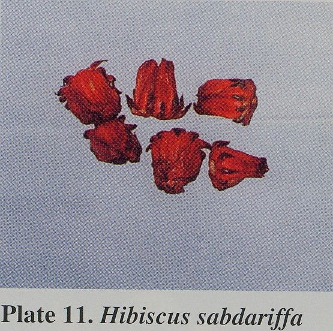
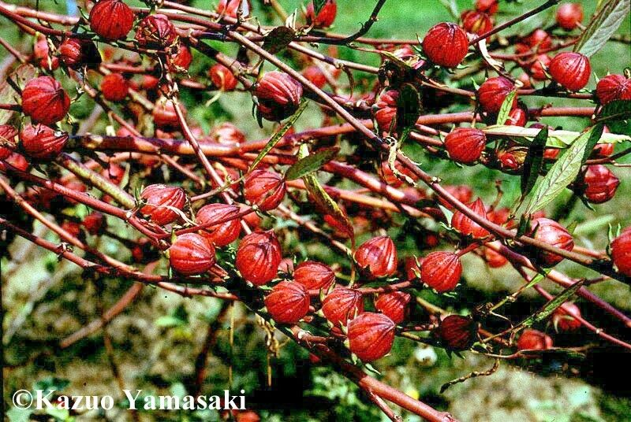
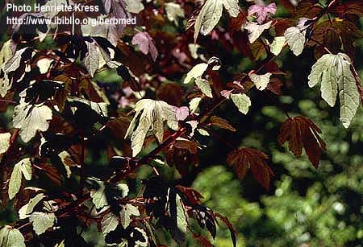

|
ECONOMICALLY
IMPORTANT PLANTS OF INDIA |
| Under-utilized Food and Fodder species and their wild relatives | Contributed by Ms.M.L Annapurna And Dr. Dhanapal, UAS, Bangalore |
Hibiscus sabdariffa Linn.
Taxonomic
Details

----- Correct Name
----- Classification
----- Synonyms
----- Common Names
Other Biological Details
----- Habit and Habitat
----- Diagnostic Features
----- Reproductive Biology
---------- Breeding System
---------- Phenology
---------- Pollinators
---------- Seed Biology
----------Seed Germination
------ Cultivation
----- Major Pests and Diseases
Economic Potential and Uses
----- Parts Used
-----Uses
----- Harvesting Practices
----- Produce and Products
----- Chemistry
----- Processing Techniques
----- Other uses
----- Economic Potential to the
Country
----- Export Potential
Miscellaneous Information
Literature
Correct
Name :Hibiscus
sabdariffa Linn.

Family : Malvaceae
Synonyms : Hibiscus cannabinus
Common Names :
English: Mesta fibre, Ambari-hemp, Deccan-hemp, Bombay-hemp, Bimblipattam jute
or Java jute.
Hindi: Lal-ambari, patwa;
Tamil: Pulichchai kerai, gogu;
Telugu: Yerra gogu
Kannada: Pulachakiri, pundibija
Marati: Lal-ambadi, patwa
HABIT & HABITAT

H. cannabinus
is related to H. sabdariffa, the roselle plant. The plants are herbaceous
annuals, growing to a height of even 5 metres; the stems are straight, with
small prickles; leaves alternate, stipulate; variously lobed very shallowly
lobed to deep lobing with serrated margins; mid-vein with one gland beneath;
stipules long and pointed.
Availability :
Status :
DIAGNOSTIC
FEATURES
Flowers solitary, with short pedicels and axillary; epicalyx stiff, consisting
of seven to eight bracteoles, which are connate below and free above and
inserted on the base of calyx; calyx bristled, lanceolate, united upto the
middle; corolla larger, spreading, pale yellow to sulphur colour with crimson or
purplish centre; stamen numerous on a staminal column; ovary superior, five
carpelled; style passes through staminal column and terminates in five stigmatic
branches.
REPRODUCTIVE
BIOLOGY
Breeding
System :
H. cannabinus is mainly a self-pollinated crop, though cross- pollination
to different degrees have been observed. The variety viridis is considered to be
completely self-pollinated, while in the var. vulgaris, the cross-pollination
varied from 2.6 to 3.9 per cent.
Phenology :
Flowering is from Aug.-Jan.
Pollinators:
Seed Biology :
Seed Germination:
Cultivation:
MAJOR
PESTS & DISEASES
Pests: Capsule borer and flea beetle.
Diseases: Black foot or stem rot, root rot and capsule rot.
Parts
used
Stem,
Produce and Products
Bast fibre
Chemistry
Flowers gave a glucoside of gossypetin named
gossytrin,hibiscitrin,gossypitrin and sabdaritrin.Flowers also gave
flavanols-gossypetin-8-glucoside and
gossypetin-3-glucoside;anthocyaninscyanidin-3.
The
Kenaf seed contains 20 per cent of oil by weight. This is edible oil and can be
made use of as substitute for cottonseed oil.
VARIETIES:
As early as 1911, Howard and Howard described five varieties comprising of eight
agricultural types. Those five varieties are: (1) var. simplex, (2) var. viridis,
(3) var. ruber, (4) var. purpurens. (5) var. uy/^arw. Varieties grown in Java
and Cuba are mostly of the var. viridis and the var. vulgaris types. Varieties
of H. cannabinus have In = 36 chromosomes. There are few cases where the
chromosome compliment has been reported as In = 72. It is possible that natural
polyploids occur within the species. The different varieties and the
geographical races of H. cannabinus cross easily.
Morphology of the Fibre:
The fibre is obtained from the bast layer which is the innermost portion of the
bark or the inner cortex of the stem. They may be either the primary fibre as
obtained from the original apical main stem or the secondary fibre as produced
from the cambium of the stem when secondary thickening takes place. Primary
fibres are closely packed together, firmer, glossier and more flexible than the
secondary fibres. The fibre strands as obtained from the stems are 1.5 metres to
3 metres in length. Each strand of fibre is composed of cells. The ends of these
cells overlap each other. Each cell varies considerably in size-but on an
average these are about 5 mm. in length and 20 microns in diameter. The width of
the lumen varies in each fibre cell. But the cells are roughly polygonal in
section due to the irregular lignification of the cell wall.

.jpg){kind=link}
.jpg){kind=link}